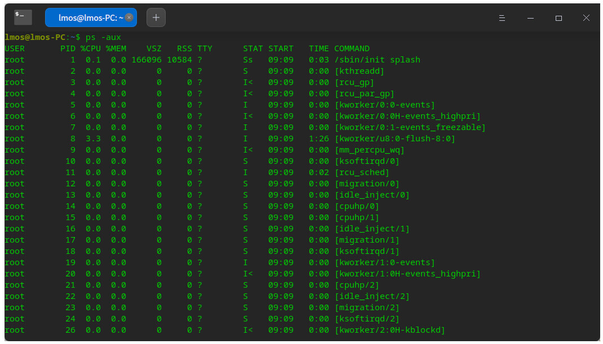
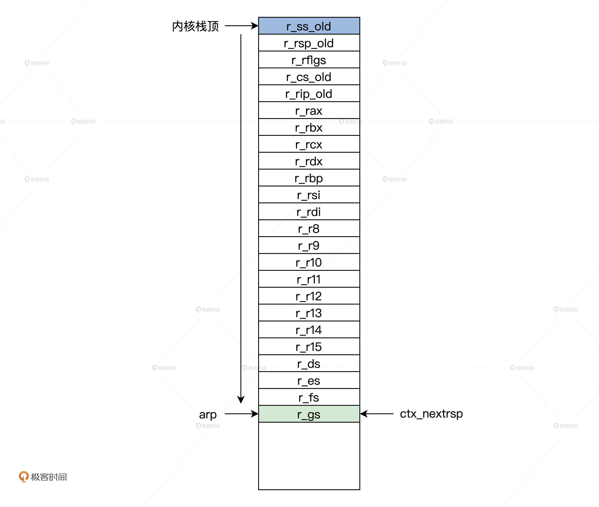
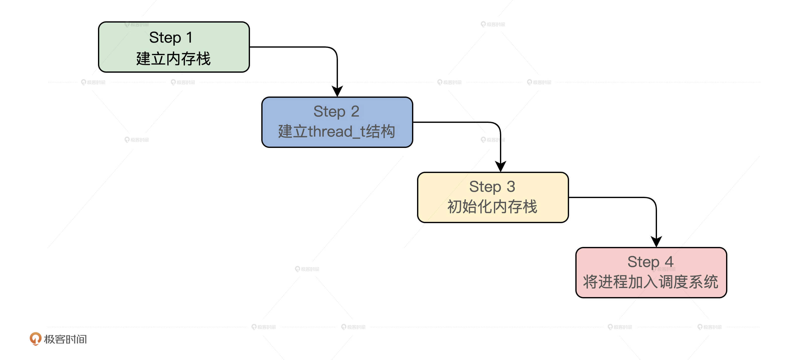

- 00 开篇词 为什么要学写一个操作系统？.md.html
- 00 编辑手记 升级认知，迭代自己的操作系统.md.html
- 01 程序的运行过程：从代码到机器运行.md.html
- 02 几行汇编几行C：实现一个最简单的内核.md.html
- 03 黑盒之中有什么：内核结构与设计.md.html
- 04 震撼的Linux全景图：业界成熟的内核架构长什么样？.md.html
- 05 CPU工作模式：执行程序的三种模式.md.html
- 06 虚幻与真实：程序中的地址如何转换？.md.html
- 07 Cache与内存：程序放在哪儿？.md.html
- 08 锁：并发操作中，解决数据同步的四种方法.md.html
- 09 瞧一瞧Linux：Linux的自旋锁和信号量如何实现？.md.html
- 10 设置工作模式与环境（上）：建立计算机.md.html
- 11 设置工作模式与环境（中）：建造二级引导器.md.html
- 12 设置工作模式与环境（下）：探查和收集信息.md.html
- 13 第一个C函数：如何实现板级初始化？.md.html
- 14 Linux初始化（上）：GRUB与vmlinuz的结构.md.html
- 15 Linux初始化（下）：从_start到第一个进程.md.html
- 16 划分土地（上）：如何划分与组织内存？.md.html
- 17 划分土地（中）：如何实现内存页面初始化？.md.html
- 18 划分土地（下）：如何实现内存页的分配与释放？.md.html
- 19 土地不能浪费：如何管理内存对象？.md.html
- 20 土地需求扩大与保障：如何表示虚拟内存？.md.html
- 21 土地需求扩大与保障：如何分配和释放虚拟内存？.md.html
- 22 瞧一瞧Linux：伙伴系统如何分配内存？.md.html
- 23 瞧一瞧Linux：SLAB如何分配内存？.md.html
- 24 活动的描述：到底什么是进程？.md.html
- 25 多个活动要安排（上）：多进程如何调度？.md.html
- 26 多个活动要安排（下）：如何实现进程的等待与唤醒机制？.md.html
- 27 瞧一瞧Linux：Linux如何实现进程与进程调度_.md.html
- 28 部门分类：如何表示设备类型与设备驱动？.md.html
- 29 部门建立：如何在内核中注册设备？.md.html
- 30 部门响应：设备如何处理内核I_O包？.md.html
- 31 瞧一瞧Linux：如何获取所有设备信息？.md.html
- 32 仓库结构：如何组织文件_.md.html
- 33 仓库划分：文件系统的格式化操作.md.html
- 34 仓库管理：如何实现文件的六大基本操作？.md.html
- 35 瞧一瞧Linux：虚拟文件系统如何管理文件？.md.html
- 36 从URL到网卡：如何全局观察网络数据流动？.md.html
- 37 从内核到应用：网络数据在内核中如何流转.md.html
- 38 从单排到团战：详解操作系统的宏观网络架构.md.html
- 39 瞧一瞧Linux：详解socket实现与网络编程接口.md.html
- 40 瞧一瞧Linux：详解socket的接口实现.md.html
- 41 服务接口：如何搭建沟通桥梁？.md.html
- 42 瞧一瞧Linux：如何实现系统API？.md.html
- 43 虚拟机内核：KVM是什么？.md.html
- 44 容器：如何理解容器的实现机制？.md.html
- 45 ARM新宠：苹果的M1芯片因何而快？.md.html
- 46 AArch64体系：ARM最新编程架构模型剖析.md.html
- LMOS来信：第二季课程带你“手撕”计算机基础.md.html
- 大咖助场 以无法为有法，以无限为有限.md.html
- 用户故事 yiyang：我的上机实验“爬坑指南”.md.html
- 用户故事 成为面向“知识库”的工程师.md.html
- 用户故事 技术人如何做选择，路才越走越宽？.md.html
- 用户故事 操作系统发烧友：看不懂？因为你没动手.md.html
- 用户故事 用好动态调试，助力课程学习.md.html
- 用户故事 艾同学：路虽远，行则将至.md.html
- 结束语 生活可以一地鸡毛，但操作系统却是心中的光.md.html
- 捐赠
24 活动的描述：到底什么是进程？
你好，我是LMOS。
在前面的课程里，我们已经实现了数据同步、hal层的初始化，中断框架、物理内存、内存对象、虚拟内存管理，这些都是操作系统中最核心的东西。
今天，我再给你讲讲操作系统里一个层次非常高的组件——进程，而它又非常依赖于内存管理、中断、硬件体系结构。好在前面课程中，这些基础知识我们已经搞得清清楚楚，安排得明明白白了，所以我们今天理解进程就变得顺理成章。
感受一下
在你看来，什么是进程呢？日常我们跟计算机打交道的时候，最常接触的就是一些应用程序，比如Word、浏览器，你可以直观感受到它们的存在。而我们却很难直观感受到什么是进程，自然也就不容易描述它的模样与形态了。
其实，在我们启用Word这些应用时，操作系统在背后就会建立至少一个进程。虽然我们难以观察它的形态，但我们绝对可以通过一些状态数据来发现进程的存在。
在Linux的终端下输入ps命令， 我们就可以看到系统中有多少个进程了。如下图所示。

这是进程吗？是的，不过这只是一些具体进程的数据，如创建进程和用户、进程ID、使用CPU的百分比，进程运行状态，进程的建立时间、进程的运行时间、进程名等，这些数据综合起来就代表了一个进程。
也许看到这，你会呵呵一笑，觉得原来抽象的进程背后，不过是一堆数据而已，关于进程这就是我们能直观感受到的东西，这就完了吗？当然没有，我们接着往下看。
什么是进程
如果你要组织一个活动怎么办？你首先会想到，这个活动的流程是什么，需要配备哪些人员和物资，中途要不要休息，活动当前进行到哪里了……如果你是个精明的人，你大概会用表格把这些信息记录下来。
同理，你运行一个应用程序时，操作系统也要记录这个应用程序使用多少内存，打开了什么文件，当有些资源不可用的时候要不要睡眠，当前进程运行到哪里了。操作系统把这些信息综合统计，存放在内存中，抽象为进程。
现在你就可以回答什么是进程了：进程是一个应用程序运行时刻的实例（从进程的结构看）；进程是应用程序运行时所需资源的容器（从进程的功能看）；甚至进程是一堆数据结构（从操作系统对进程实现的角度来说）。
这也太简单了吧？对，进程的抽象概念就是这么简单。我知道这一定不能让你真正明白什么是进程，抽象的概念就是如此，你不在实践中设计并实现它，是很难真正明白的。下面我们先来细化设计。
进程的结构
首先，进程是一个应用程序运行时刻的实例，它的目的就是操作系统用于管理和运行多个应用程序的；其次，从前面我们实现的内存管理组件角度看，操作系统是给应用程序提供服务的。
所以，从这两个角度看，进程必须要有一个地址空间，这个地址空间至少包括两部分内容：一部分是内核，一部分是用户的应用程序。
最后，结合x86硬件平台对虚拟地址空间的制约，我给你画了一幅图，如下所示。

上图中有8个进程，每个进程拥有x86 CPU的整个虚拟地址空间，这个虚拟地址空间被分成了两个部分，上半部分是所有进程都共享的内核部分 ，里面放着一份内核代码和数据，下半部分是应用程序，分别独立，互不干扰。
还记得我们讲过的x86 CPU的特权级吗？
当CPU在R0特权级运行时，就运行在上半部分内核的地址空间中，当CPU在R3特权级时，就运行在下半部分的应用程序地址空间中。各进程的虚拟地址空间是相同的，它们之间物理地址不同，是由MMU页表进行隔离的，所以每个进程的应用程序的代码绝对不能随意访问内核的代码和数据。
以上是整体结构，下面我们来细化一下进程需要实现哪些功能？
我们先从应用程序和内核的关系看。应用程序需要内核提供资源，而内核需要控制应用程序的运行。那么内核必须能够命令应用程序，让它随时中断（进入内核地址空间）或恢复执行，这就需要保存应用程序的机器上下文和它运行时刻的栈。
接着，我们深入内核提供服务的机制。众所周知，内核是这样提供服务的：通过停止应用程序代码运行，进入内核地址空间运行内核代码，然后返回结果。就像活动组织者会用表格备案一样，内核还需要记录一个应用程序都访问了哪些资源，比如打开了某个文件，或是访问了某个设备。而这样的“记录表”，我们就用“资源描述符”来表示。
而我们前面已经说了，进程是一个应用程序运行时刻的实例。那这样一来，一个细化的进程结构，就可以像下图这样设计。

上图中表示了一个进程详细且必要的结构，其中带*号是每个进程都有独立一份，有了这样的设计结构，多个进程就能并发运行了。前面这些内容还是纸上谈兵，你重点搞明白进程的概念和结构就行了。
实现进程
前面我们简单介绍了进程的概念和结构，之所以简单，是为了不在理论层面就把问题复杂化，这对我们实现Cosmos的进程组件没有任何好处。
但只懂理论还是空中阁楼，我们可以一步步在设计实现中，由浅到深地理解什么是进程。我们这就把前面的概念和设计，一步步落实到代码，设计出对应的数据结构。
如何表示一个进程
根据前面课程的经验，如果要在软件代码中表示一个什么东西时，就要设计出对应的数据结构。
那么对于一个进程，它有状态，id，运行时间，优先级，应用程序栈，内核栈，机器上下文，资源描述符，地址空间，我们将这些信息组织在一起，就形成了一个进程的数据结构。
下面我带你把它变成代码，在cosmos/include/knlinc/目录下建立一个krlthread_t.h文件，在其中写上代码，如下所示。
typedef struct s_THREAD
{
spinlock_t td_lock; //进程的自旋锁
list_h_t td_list; //进程链表
uint_t td_flgs; //进程的标志
uint_t td_stus; //进程的状态
uint_t td_cpuid; //进程所在的CPU的id
uint_t td_id; //进程的id
uint_t td_tick; //进程运行了多少tick
uint_t td_privilege; //进程的权限
uint_t td_priority; //进程的优先级
uint_t td_runmode; //进程的运行模式
adr_t td_krlstktop; //应用程序内核栈顶地址
adr_t td_krlstkstart; //应用程序内核栈开始地址
adr_t td_usrstktop; //应用程序栈顶地址
adr_t td_usrstkstart; //应用程序栈开始地址
mmadrsdsc_t* td_mmdsc; //地址空间结构
context_t td_context; //机器上下文件结构
objnode_t* td_handtbl[TD_HAND_MAX];//打开的对象数组
}thread_t;
在Cosmos中，我们就使用thread_t结构的一个实例变量代表一个进程。进程的内核栈和进程的应用程序栈是两块内存空间，进程的权限表示一个进程是用户进程还是系统进程。进程的权限不同，它们能完成功能也不同。
万事都有轻重缓急，进程也一样，进程有64个优先级，td_priority数值越小优先级越高。td_handtbl只是一个objnode_t结构的指针类型数组。
比方说，一个进程打开一个文件内核就会创建一个对应的objnode_t结构的实例变量，这个objnode_t结构的地址就保存在td_handtbl数组中。你可以这么理解：这个objnode_t结构就是进程打开资源的描述符。
进程的地址空间
在thread_t结构中有个mmadrsdsc_t结构的指针，在这个结构中有虚拟地址区间结构和MMU相关的信息。mmadrsdsc_t结构你应该很熟悉，在虚拟内存那节课中，我们学习过，今天我们再次复习一下，如下所示。
typedef struct s_MMADRSDSC
{
spinlock_t msd_lock; //保护自身的自旋锁
list_h_t msd_list; //链表
uint_t msd_flag; //状态和标志
uint_t msd_stus;
uint_t msd_scount; //计数，该结构可能被共享
sem_t msd_sem; //信号量
mmudsc_t msd_mmu; //MMU页表相关的信息
virmemadrs_t msd_virmemadrs; //虚拟地址空间结构
adr_t msd_stext; //应用的指令区的开始、结束地址
adr_t msd_etext;
adr_t msd_sdata; //应用的数据区的开始、结束地址
adr_t msd_edata;
adr_t msd_sbss; //应用初始化为0的区域开始、结束地址
adr_t msd_ebss;
adr_t msd_sbrk; //应用的堆区的开始、结束地址
adr_t msd_ebrk;
}mmadrsdsc_t;
上述代码中，注释已经很清楚了，mmadrsdsc_t结构描述了一个进程的完整的地址空间。需要搞清楚的是：在常规情况下，新建一个进程就要建立一个mmadrsdsc_t结构，让thread_t结构的td_mmdsc的指针变量指向它。
进程的机器上下文
进程的机器上下文分为几个部分，一部分是CPU寄存器，一部分是内核函数调用路径。CPU的通用寄存器，是中断发生进入内核时，压入内核栈中的，从中断入口处开始调用的函数，都是属于内核的函数。
函数的调用路径就在内核栈中，整个过程是这样的：进程调度器函数会调用进程切换函数，完成切换进程这个操作，而在进程切换函数中会保存栈寄存器的值。好，下面我们来设计这样一个结构来保存这些信息。
typedef struct s_CONTEXT
{
uint_t ctx_nextrip; //保存下一次运行的地址
uint_t ctx_nextrsp; //保存下一次运行时内核栈的地址
x64tss_t* ctx_nexttss; //指向tss结构
}context_t;
context_t结构中的字段不多，我们相对陌生的就是x64tss_t结构的指针，这个结构是CPU要求的一个结构，这个结构它本身的地址放在一个GDT表项中，由CPU的tr寄存器指向，tr寄存器中的值是GDT中x64tss_t结构项对应的索引。x64tss_t结构的代码如下所示。
// cosmos/hal/x86/halglobal.c
// 每个CPU核心一个tss
HAL_DEFGLOB_VARIABLE(x64tss_t,x64tss)[CPUCORE_MAX];
typedef struct s_X64TSS
{
u32_t reserv0; //保留
u64_t rsp0; //R0特权级的栈地址
u64_t rsp1; //R1特权级的栈地址，我们未使用
u64_t rsp2; //R2特权级的栈地址，我们未使用
u64_t reserv28;//保留
u64_t ist[7]; //我们未使用
u64_t reserv92;//保留
u16_t reserv100;//保留
u16_t iobase; //我们未使用
}__attribute__((packed)) x64tss_t;
CPU在发生中断时，会根据中断门描述里的目标段选择子，进行必要的特权级切换，特权级的切换就必须要切换栈，CPU硬件会自己把当前rsp寄存器保存到内部的临时寄存器tmprsp；然后从x64tss_t结构体中找出对应的栈地址，装入rsp寄存器中；接着，再把当前的ss、tmprsp、rflags、cs、rip，依次压入当前rsp指向的栈中。
建立进程
之前我们已经设计好了进程相关的数据结构，现在我们要讨论如何建立一个新的进程了。建立进程非常简单，就是在内存中建立起对应的数据结构的实例变量。
但是对进程来说，并不是建立thread_t结构的实例变量就完事了，还要建立进程的应用程序栈和进程的内核栈，进程地址空间等。下面我们一起来实现建立进程的功能。
建立进程接口
我们先从建立进程的接口开始写起，先在cosmos/kernel/目录下新建一个文件krlthread.c，在其中写上一个函数。接口函数总是简单的，代码如下所示。
thread_t *krlnew_thread(void *filerun, uint_t flg, uint_t prilg, uint_t prity, size_t usrstksz, size_t krlstksz)
{
size_t tustksz = usrstksz, tkstksz = krlstksz;
//对参数进行检查，不合乎要求就返回NULL表示创建失败
if (filerun == NULL || usrstksz > DAFT_TDUSRSTKSZ || krlstksz > DAFT_TDKRLSTKSZ)
{
return NULL;
}
if ((prilg != PRILG_USR && prilg != PRILG_SYS) || (prity >= PRITY_MAX))
{
return NULL;
}
//进程应用程序栈大小检查，大于默认大小则使用默认大小
if (usrstksz < DAFT_TDUSRSTKSZ)
{
tustksz = DAFT_TDUSRSTKSZ;
}
//进程内核栈大小检查，大于默认大小则使用默认大小
if (krlstksz < DAFT_TDKRLSTKSZ)
{
tkstksz = DAFT_TDKRLSTKSZ;
}
//是否建立内核进程
if (KERNTHREAD_FLG == flg)
{
return krlnew_kern_thread_core(filerun, flg, prilg, prity, tustksz, tkstksz);
}
//是否建立普通进程
else if (USERTHREAD_FLG == flg)
{
return krlnew_user_thread_core(filerun, flg, prilg, prity, tustksz, tkstksz);
}
return NULL;
}
上述代码中的krlnew_thread函数的流程非常简单，对参数进行合理检查，其参数从左到右分别是应用程序启动运行的地址、创建标志、进程权限和进程优先级、进程的应用程序栈和内核栈大小。
进程对栈的大小有要求，如果小于默认大小8个页面就使用默认的栈大小，最后根据创建标志确认是建立内核态进程还是建立普通进程。
建立内核进程
你一定在想，什么是内核进程？其实内核进程就是用进程的方式去运行一段内核代码，那么这段代码就可以随时暂停或者继续运行，又或者和其它代码段并发运行，只是这种进程永远不会回到进程应用程序地址空间中去，只会在内核地址空间中运行。
下面我来写代码实现建立一个内核态进程，如下所示。
thread_t *krlnew_kern_thread_core(void *filerun, uint_t flg, uint_t prilg, uint_t prity, size_t usrstksz, size_t krlstksz)
{
thread_t *ret_td = NULL;
bool_t acs = FALSE;
adr_t krlstkadr = NULL;
//分配内核栈空间
krlstkadr = krlnew(krlstksz);
if (krlstkadr == NULL)
{
return NULL;
}
//建立thread_t结构体的实例变量
ret_td = krlnew_thread_dsc();
if (ret_td == NULL)
{//创建失败必须要释放之前的栈空间
acs = krldelete(krlstkadr, krlstksz);
if (acs == FALSE)
{
return NULL;
}
return NULL;
}
//设置进程权限
ret_td->td_privilege = prilg;
//设置进程优先级
ret_td->td_priority = prity;
//设置进程的内核栈顶和内核栈开始地址
ret_td->td_krlstktop = krlstkadr + (adr_t)(krlstksz - 1);
ret_td->td_krlstkstart = krlstkadr;
//初始化进程的内核栈
krlthread_kernstack_init(ret_td, filerun, KMOD_EFLAGS);
//加入进程调度系统
krlschdclass_add_thread(ret_td);
//返回进程指针
return ret_td;
}
上述代码的逻辑非常简单，首先分配一个内核栈的内存空间，接着创建thread_t结构的实例变量，然后对thread_t结构体的字段进行设置，最后，初始化进程内核栈把这个新进程加入到进程的调度系统之中，下面来一步步写入实现这些逻辑的代码。
创建thread_t结构
创建thread_t结构，其实就是分配一块内存用于存放thread_t结构的实例变量。类似这样的操作我们课程里做过多次，相信现在你已经能驾轻就熟了。下面我们来写代码实现这个操作，如下所示。
//初始化context_t结构
void context_t_init(context_t *initp)
{
initp->ctx_nextrip = 0;
initp->ctx_nextrsp = 0;
//指向当前CPU的tss
initp->ctx_nexttss = &x64tss[hal_retn_cpuid()];
return;
}
//返回进程id其实就thread_t结构的地址
uint_t krlretn_thread_id(thread_t *tdp)
{
return (uint_t)tdp;
}
//初始化thread_t结构
void thread_t_init(thread_t *initp)
{
krlspinlock_init(&initp->td_lock);
list_init(&initp->td_list);
initp->td_flgs = TDFLAG_FREE;
initp->td_stus = TDSTUS_NEW;//进程状态为新建
initp->td_cpuid = hal_retn_cpuid();
initp->td_id = krlretn_thread_id(initp);
initp->td_tick = 0;
initp->td_privilege = PRILG_USR;//普通进程权限
initp->td_priority = PRITY_MIN;//最高优先级
initp->td_runmode = 0;
initp->td_krlstktop = NULL;
initp->td_krlstkstart = NULL;
initp->td_usrstktop = NULL;
initp->td_usrstkstart = NULL;
initp->td_mmdsc = &initmmadrsdsc;//指向默认的地址空间结构
context_t_init(&initp->td_context);
//初始化td_handtbl数组
for (uint_t hand = 0; hand < TD_HAND_MAX; hand++)
{
initp->td_handtbl[hand] = NULL;
}
return;
}
//创建thread_t结构
thread_t *krlnew_thread_dsc()
{
//分配thread_t结构大小的内存空间
thread_t *rettdp = (thread_t *)(krlnew((size_t)(sizeof(thread_t))));
if (rettdp == NULL)
{
return NULL;
}
//初始化刚刚分配的thread_t结构
thread_t_init(rettdp);
return rettdp;
}
相信凭你现在的能力，上述代码一定是超级简单的。不过我们依然要注意这样几点。
首先，我们以thread_t结构的地址作为进程的ID，这个ID具有唯一性；其次，我们目前没有为一个进程分配mmadrsdsc_t结构体，而是指向了默认的地址空间结构initmmadrsdsc；最后，hal_retn_cpuid函数在目前的情况下永远返回0，这是因为我们使用了一个CPU。
初始化内核栈
为什么要初始化进程的内核栈呢？
你也许会想，进程的内核栈无非是一块内存，其实只要初始化为0就好。当然不是这么简单，我们初始化进程的内核栈，其实是为了在进程的内核栈中放置一份CPU的寄存器数据。
这份CPU寄存器数据是一个进程机器上下文的一部分，当一个进程开始运行时，我们将会使用“pop”指令从进程的内核栈中弹出到CPU中，这样CPU就开始运行进程了，CPU的一些寄存器是有位置关系的，所以我们要定义一个结构体来操作它们，如下所示。
typedef struct s_INTSTKREGS
{
uint_t r_gs;
uint_t r_fs;
uint_t r_es;
uint_t r_ds; //段寄存器
uint_t r_r15;
uint_t r_r14;
uint_t r_r13;
uint_t r_r12;
uint_t r_r11;
uint_t r_r10;
uint_t r_r9;
uint_t r_r8;
uint_t r_rdi;
uint_t r_rsi;
uint_t r_rbp;
uint_t r_rdx; //通用寄存器
uint_t r_rcx;
uint_t r_rbx;
uint_t r_rax;
uint_t r_rip_old;//程序的指针寄存器
uint_t r_cs_old;//代码段寄存器
uint_t r_rflgs; //rflags标志寄存
uint_t r_rsp_old;//栈指针寄存器
uint_t r_ss_old; //栈段寄存器
}intstkregs_t;
intstkregs_t结构中，每个字段都是8字节64位的，因为x86 CPU在长模式下rsp栈指针寄存器始终8字节对齐。栈是向下伸长的（从高地址向低地址）所以这个结构是反向定义（相对于栈）如果你不理解这个寄存器位置，可以回到中断处理那节课复习一下。
intstkregs_t结构已经定义好了，下面我们来写代码初始化内核栈，如下所示。
void krlthread_kernstack_init(thread_t *thdp, void *runadr, uint_t cpuflags)
{
//处理栈顶16字节对齐
thdp->td_krlstktop &= (~0xf);
thdp->td_usrstktop &= (~0xf);
//内核栈顶减去intstkregs_t结构的大小
intstkregs_t *arp = (intstkregs_t *)(thdp->td_krlstktop - sizeof(intstkregs_t));
//把intstkregs_t结构的空间初始化为0
hal_memset((void*)arp, 0, sizeof(intstkregs_t));
//rip寄存器的值设为程序运行首地址
arp->r_rip_old = (uint_t)runadr;
//cs寄存器的值设为内核代码段选择子
arp->r_cs_old = K_CS_IDX;
arp->r_rflgs = cpuflags;
//返回进程的内核栈
arp->r_rsp_old = thdp->td_krlstktop;
arp->r_ss_old = 0;
//其它段寄存器的值设为内核数据段选择子
arp->r_ds = K_DS_IDX;
arp->r_es = K_DS_IDX;
arp->r_fs = K_DS_IDX;
arp->r_gs = K_DS_IDX;
//设置进程下一次运行的地址为runadr
thdp->td_context.ctx_nextrip = (uint_t)runadr;
//设置进程下一次运行的栈地址为arp
thdp->td_context.ctx_nextrsp = (uint_t)arp;
return;
}
上述代码没什么难点，就是第7行我要给你解释一下，arp为什么要用内核栈顶地址减去intstkregs_t结构的大小呢？
C语言处理结构体时，从结构体第一个字段到最后一个字段，这些字段的地址是从下向上（地址从低到高）伸长的，而栈正好相反，所以要减去intstkregs_t结构的大小，为intstkregs_t结构腾出空间，如下图所示。

因为我们建立的是内核态进程，所以上面初始化的内核栈是不能返回到进程的应用程序空间的。而如果要返回到进程的应用程序空间中，内核栈中的内容是不同的，但是内核栈结构却一样。
下面我们动手写代码，初始化返回进程应用程序空间的内核栈。请注意，初始化的还是内核栈，只是内容不同，代码如下所示。
void krlthread_userstack_init(thread_t *thdp, void *runadr, uint_t cpuflags)
{
//处理栈顶16字节对齐
thdp->td_krlstktop &= (~0xf);
thdp->td_usrstktop &= (~0xf);
//内核栈顶减去intstkregs_t结构的大小
intstkregs_t *arp = (intstkregs_t *)(thdp->td_krlstktop - sizeof(intstkregs_t));
//把intstkregs_t结构的空间初始化为0
hal_memset((void*)arp, 0, sizeof(intstkregs_t));
//rip寄存器的值设为程序运行首地址
arp->r_rip_old = (uint_t)runadr;
//cs寄存器的值设为应用程序代码段选择子
arp->r_cs_old = U_CS_IDX;
arp->r_rflgs = cpuflags;
//返回进程应用程序空间的栈
arp->r_rsp_old = thdp->td_usrstktop;
//其它段寄存器的值设为应用程序数据段选择子
arp->r_ss_old = U_DS_IDX;
arp->r_ds = U_DS_IDX;
arp->r_es = U_DS_IDX;
arp->r_fs = U_DS_IDX;
arp->r_gs = U_DS_IDX;
//设置进程下一次运行的地址为runadr
thdp->td_context.ctx_nextrip = (uint_t)runadr;
//设置进程下一次运行的栈地址为arp
thdp->td_context.ctx_nextrsp = (uint_t)arp;
return;
}
上述代码中初始化进程的内核栈，所使用的段选择子指向的是应用程序的代码段和数据段，这个代码段和数据段它们特权级为R3，CPU正是根据这个代码段、数据段选择子来切换CPU工作特权级的。这样，CPU的执行流就可以返回到进程的应用程序空间了。
建立普通进程
在建立进程的接口函数krlnew_thread的流程中，会根据参数flg的值，选择调用不同的函数，来建立不同类型的进程。
前面我们已经写好了建立内核进程的函数，接下来我们还要写好建立普通进程的函数，如下所示。
thread_t *krlnew_user_thread_core(void *filerun, uint_t flg, uint_t prilg, uint_t prity, size_t usrstksz, size_t krlstksz)
{
thread_t *ret_td = NULL;
bool_t acs = FALSE;
adr_t usrstkadr = NULL, krlstkadr = NULL;
//分配应用程序栈空间
usrstkadr = krlnew(usrstksz);
if (usrstkadr == NULL)
{
return NULL;
}
//分配内核栈空间
krlstkadr = krlnew(krlstksz);
if (krlstkadr == NULL)
{
if (krldelete(usrstkadr, usrstksz) == FALSE)
{
return NULL;
}
return NULL;
}
//建立thread_t结构体的实例变量
ret_td = krlnew_thread_dsc();
//创建失败必须要释放之前的栈空间
if (ret_td == NULL)
{
acs = krldelete(usrstkadr, usrstksz);
acs = krldelete(krlstkadr, krlstksz);
if (acs == FALSE)
{
return NULL;
}
return NULL;
}
//设置进程权限
ret_td->td_privilege = prilg;
//设置进程优先级
ret_td->td_priority = prity;
//设置进程的内核栈顶和内核栈开始地址
ret_td->td_krlstktop = krlstkadr + (adr_t)(krlstksz - 1);
ret_td->td_krlstkstart = krlstkadr;
//设置进程的应用程序栈顶和内核应用程序栈开始地址
ret_td->td_usrstktop = usrstkadr + (adr_t)(usrstksz - 1);
ret_td->td_usrstkstart = usrstkadr;
//初始化返回进程应用程序空间的内核栈
krlthread_userstack_init(ret_td, filerun, UMOD_EFLAGS);
//加入调度器系统
krlschdclass_add_thread(ret_td);
return ret_td;
}
和建立内核进程相比，建立普通进程有两点不同。第一，多分配了一个应用程序栈。因为内核进程不会返回到进程的应用程序空间，所以不需要应用程序栈，而普通进程则需要；第二，在最后调用的是krlthread_userstack_init函数，该函数初始化返回进程应用程序空间的内核栈，这在前面已经介绍过了。
到此为止，我们建立进程的功能已经实现了。但是最后将进程加入到调度系统的函数，我们还没有写，这个函数是进程调度器模块的函数，我们下节课再讨论。
重点回顾
这节课我们用最简洁的方式了解了进程以及如何建立一个进程，我来为你梳理一下今天的课程重点。
首先，我们在Linux系统上，用ps命令列出Linux系统上所有的进程，直观的感受了一下什么进程，从理论上了解了一下进程的结构。
然后我们把进程相关的信息，做了归纳整理，设计出一系列相应的数据结构，这其中包含了表示进程的数据结构，与进程相关内存地址空间结构，还有进程的机器上下文数据结构。这些数据结构综合起来就表示了进程。
最后进入建立进程的环节。有了进程相关的数据结构就可以写代码建立一个进程了，我们的建立进程的接口函数，既能建立普通进程又能建立内核进程，而建立进程的过程无非是创建进程结构体、分配进程的内核栈与应用程序栈，并对进程的内核栈进行初始化，最后将进程加入调度系统，以便后面将进程投入运行。

很多理论书籍总是在开头就花大量篇幅讲进程，但你却很难搞懂，这是为什么呢？第一，他们在用抽象方法讲解抽象概念，对初学者很不友好；第二，讲解顺序不对，想搞懂进程，需要前置知识，它是一个高层次的组件。
相信经过前面章节的学习，你现在理解进程会轻松自如。
思考题
请问，各个进程是如何共享同一份内核代码和数据的？
欢迎你在留言区和我交流，相信通过积极参与，你将更好地理解这节课的内容。也欢迎你把这节课分享给你的朋友，说不定可以帮他真正弄懂什么是进程。
好，我是LMOS，我们下节课见！
© 2019 - 2023 Liangliang Lee. Powered by gin and hexo-theme-book.